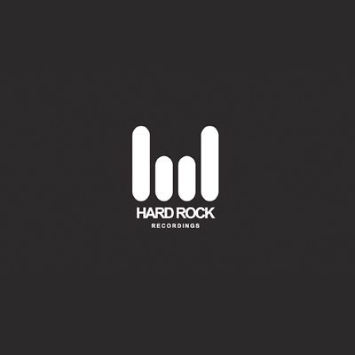
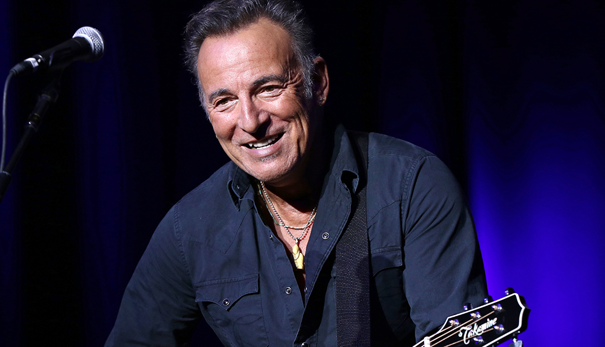

Bruce Springsteen visita una tienda de guitarras con su amigo Peter Wolf
Bruce Springsteen ha estado pasando mucho tiempo en Boston recientemente. A principios de este mes, The Boss tomó unas cuantas copas y visitó a un músico local en The Bebop en Boylston Street, y el viernes pasado estuvo n la famosa tienda de Mr. Music en Allston para probar algunas guitarras con su amigo, el legendario músico de Boston. Peter Wolf , el lider de la J. Geils Band.

Springsteen y Wolf pasaron unos 40 minutos en la tienda independiente, pasándose el tiempo en la sección de Telecaster y simplemente ocupándose de sus propios asuntos, sin ser reconocidos por otros compradores. Springsteen también adquirió y tocó una guitarra Gibson Byrdland de los años 70, y esa guitarra se vendió ayer, probablemente por alguien que no se dio cuenta de que The Boss la había tocado unos días antes.
La tienda Mr. Music publicó algunas imágenes de cámaras de vigilancia de la visita improvisada de Bruce Springsteen y Peter Wolf.
Columna2